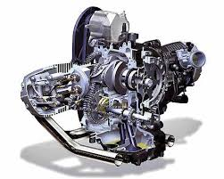
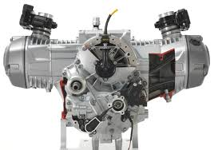

Plus de confort pour un plus grand sentiment de liberte. La BMW R 1200 RT a secoue toute la gamme de motos routieres classiques comme aucune autre machine. Parce que l'agilite de la R 1200 RT permet de se concentrer sur le plus important : piloter en profitant du paysage. Que ce soit en solo ou avec un compagnon de voyage : la R 1200 RT est toujours confortable, pour un pilotage detendu a chaque virage.

La nouvelle RT est entrainee par le moteur BMW de type boxer refroidi par air/eau qui offre une poussee vers l avant puissante avec un fort couple et une sortie de puissance de 125 ch. Grace a la suspension active, la moto est tres facile a piloter et offre une stabilite hors norme sur tout type de route. De plus, les modes standard Rain et Road peuvent egalement etre actives en appuyant sur une touche. L adaptation de la moto routiere aux conditions meteorologiques et e la surface de la route se fait en un clin d oeil.
